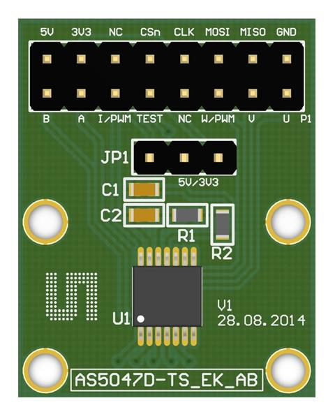
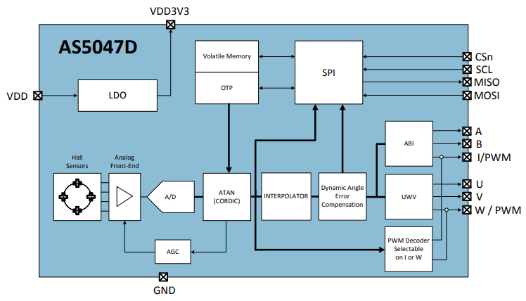

Magnetic Rotary Encoder
Working of Servo motor:
- AS5047D is a high resolution magnetic rotary position sensor.
- AS5047D is a high-resolution rotary position sensor for fast absolute angle measurement over a full 360-degree range.
- This new position sensor is equipped with revolutionary integrated dynamic angle error compensation (DAEC™) with almost 0 latency and offers a robust design that suppresses the influence of any homogenous external stray magnetic field.
- A standard 4-wire SPI serial interface allows a host microcontroller to read 14-bit absolute angle position data from the AS5047D and to program non-volatile settings without a dedicated programmer.
Internal mechanism of AS5047D encoder.
- The AS5047D is a Hall-effect magnetic sensor.
- The signals from the Hall sensors are amplified and filtered by the analog front-end (AFE)
- Then converts into Digital signal.
- The output of the ADC is processed by the hardwired CORDIC (coordinate rotating digital computer) block to compute the angle and magnitude of the magnetic vector.
- The intensity of the magnetic field (magnitude) is used by the automatic gain control (AGC) to adjust the amplification level for compensation of the temperature and magnetic field variations.
- The internal 14-bit resolution is available by readout register via the SPI interface.
I2C Protocol
- SPI stands for Serial Peripheral Interface.
- SPI was developed by Motorola to do full-duplex synchronous serial communication. Contrast with I2C which is half-duplex protocol.
- SPI uses 4 wires for communication.
- Clock Polarity (CPOL): used to determine the ideal state of the clock, if CPOL is 0, then ideal state is 0. If CPHA is 1, then ideal state is 1.
- Clock Phase (CPHA): phase determines at which edge data read/write occurs
Useful Resources
AS5047D Datasheet: Datasheet by amsBoard Manual: Manual
For more information refer documentation.